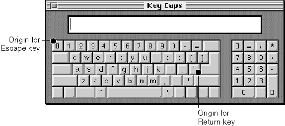
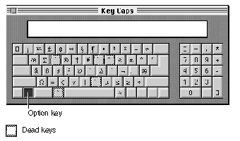
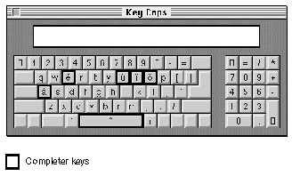

Legacy Document
Important: The information in this document is obsolete and should not be used for new development.
Important: The information in this document is obsolete and should not be used for new development.


Key Caps Desk Accessory
This section discusses how the Key Caps desk accessory uses information in its key-caps resource to represent the physical layout of a keyboard. It also describes how the
Key Caps desk accessory provides feedback to the user on how dead keys produce
accented characters.Listing C-4 on page C-31 is a portion of the data from the key-caps resource (
'KCAP'
ID = 1), which is used with the standard ADB keyboard (keyboard type 1, the domestic layout of the Apple Keyboard II). Working with that resource, the Key Caps desk accessory produces the display shown in Figure C-12 when it is used with the standard U.S. keyboard-layout resource ('KCHR'ID = 0).Figure C-12 Key Caps display with key origins
 The Key Caps desk accessory provides feedback on using dead keys to produce accented characters. It indicates dead keys with dotted borders, as shown in the Key Caps window in Figure C-13, which shows the U.S. keyboard layout with the Option
key pressed.Figure C-13 Key Caps display of dead keys with Option key pressed
 If a dead key is entered, such as the circumflex dead-key combination (Option-I), the display changes to highlight the completer keys for this dead key. The user can press any completer key to generate valid accented character combinations, as shown in Figure C-14. If your application displays keyboards, you should use a similar method of indicating dead keys and completers.
Figure C-14 Key Caps display of completer keys after circumflex dead key has been pressed
